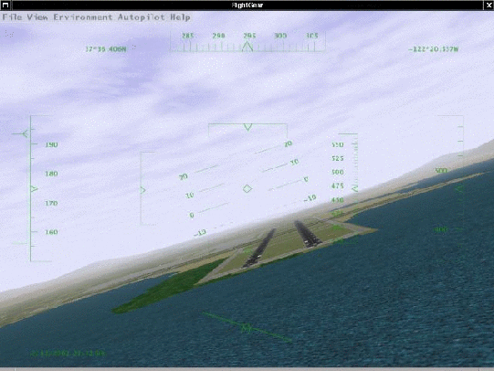
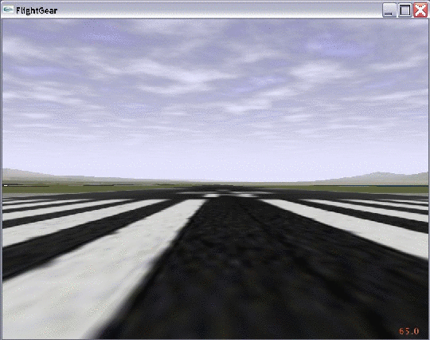
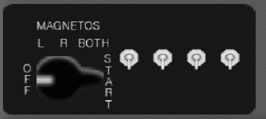
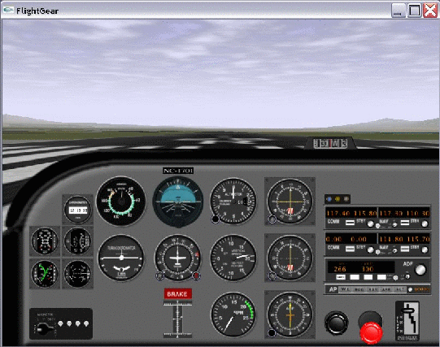
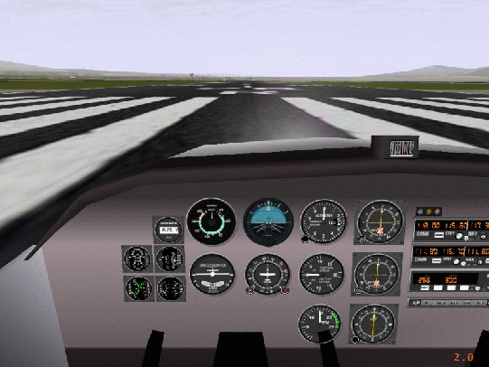

FlightGear is a free Flight Simulator developed co-operatively over the Internet by a group of Flight Simulation and Programming Enthusiasts. This ”Installation and Getting Started” is meant to give beginners a guide in getting the program up and running. It is not intended to be a complete documentation of all the features and add-ons of FlightGear, but just of those aspects necessary to get into the air.
This guide is split into two parts. The first one describes how to install the program while the second one details on how to actually fly with FlightGear.
In more detail, the chapters concentrate on the following aspects:
Part I: Installation
Chapter 1, Want to have a free flight? Take FlightGear, introduces the concept, describes the system requirements, and classifies the different versions available.
Chapter 2, Building the plane: Compiling the program, explains how to build (compile and link) the simulator. Depending on your platform this may or may not be required. Generally, there will be executable programs (binaries) available for several platforms. Those on such systems who want to take off immediately, without going through the potentially troublesome process of compiling, may skip that Chapter.
In Chapter 3, Preflight: Installing FlightGear, you will find instructions for installing the binaries in case you did not build them yourself as specified in the previous Chapter. You will need to install scenery, textures, and other support files collected in the base package.
Part II: Installation
The following Chapter 4, Takeoff: How to start the program, describes how to actually start the program installed program. It includes an overview on the numerous command line options as well as configuration files.
Chapter 5, In-flight: All about instruments, keystrokes and menus, describes how to operate the program, i. e. how to actually fly with FlightGear. This includes a (hopefully) complete list of pre-defined keystroke commands, an overview on the menu entries, detailed descriptions of instrument panel and HUD (head up display) as well as hints on using the mouse functions.
In Appendix A, Landing: Some further thoughts before leaving the plane, we would like to give credit to those who deserve it, sketch an overview on the development of FlightGearand point out what remains to be done.
In Appendix B, Missed approach: If anything refuses to work, we try to give you a hand in case of some common problems faced with FlightGear.
The final chapter C, OpenGL graphics drivers, describes some special problems you may entounter in case your system lacks support for the graphics engine called OpenGL which FlightGear is based on.
Accordingly, we suggest reading the Chapters as follows:
| Installation | |
| Users of binary distributions (notably under Windows): | 3 |
| Installation under Linux/UNIX: | 2, 3 |
| Installation under MacIntosh: | 3 |
| Operation | |
| Program start (all users): | 4 |
| Keycodes, Panel, Mouse. . . (all users): | 5 |
| Troubleshooting | |
| Generally | B |
| Graphics problems: | C |
| Optionally | 1, A |
While this introductory guide is meant to be self contained, we stronly suggest having a look into further documentation, notably in case of trouble:
http://www.flightgear.org/Docs/FlightGear-FAQ.html,
The FAQ contains a host of valuable information, notably on rapidly changing flaws and additional reading, thus we strongly suggest consulting it joiontly with our guide.
http://www.flightgear.org/Docs/InstallGuide/FGShortRef.html,
Finally:
We know, most people hate reading manuals. If you are sure the graphics driver for your card supports OpenGL (check documentation; for instance all NVIDIA Windows and Linux drivers for TNT/TNT2/Geforce/Geforce2/Geforce3 do) and if you are using one of the following operating systems:
you can possibly skip at least Part I of this manual and exploit the pre-compiled binaries. These as well as instructions on how to set them up can be found at
http://www.flightgear.org/Downloads/.
In case of running FlightGear on Linux you may also get Binareis bundled with your distrinbution. Several vendoes already include FlightGear binaries into their distributions.
Just download them, install them according to the description and run them via the attached script runfgfs or batch file runfgfs.bat, resp.
There is no guarantee for this approach to work, though. If it doesn’t, don’t give up, but have a closer look into the present manual, notably Section 3, as well as into the FAQ.
Did you ever want to fly a plane yourself, but lacked the money or ability to do so? Are you a real pilot looking to improve your skills without having to take off? Do you want to try some dangerous maneuvers without risking your life? Or do you just want to have fun with a more serious game not killing any people? If any of these questions applies, PC flight simulators are just for you.
You already may have some experience using Microsoft’s © Flight Simulator or any other of the commercially available PC flight simulators. As the price tag of those is usually within the $50 range buying one of them should not be a serious problem given that running any serious PC flight simulator requires a hardware within the $1500 range, despite dropping prices, at least.
Why then that effort of spending hundreds or thousands of hours of programming to build a free simulator? Obviously there must be good reason to do so:
The above-mentioned points make FlightGear superior to its competitors in several respect. FlightGear aims to be a civilian, multi-platform, open, user-supported, user-extensible platform.

Fig. 1: FlightGear under UNIX: Bad approach to San Francisco International - by one of the authors of this manual. . .
At present, there is no known flight simulator - commercial or free - supporting such a broad range of platforms.
The GPL is often misunderstood. In simple terms it states that you can copy and freely distribute the program(s) so licensed. You can modify them if you like. You are even allowed to charge as much money for the distribution of the modified or original program as you want. However, you must distribute it complete with the entire source code and it must retain the original copyrights. In short:
Without doubt, the success of the Linux project initiated by Linus Torvalds inspired several of the developers. Not only has it shown that distributed development of even highly sophisticated software projects over the Internet is possible.
In comparison to other recent flight simulators the system requirements for FlightGear are not extravagant. A decent PII/400 or something in that range should be sufficient, given you have a proper 3-D graphics card. On the other hand, any modern UNIX-type workstation with a 3D graphics card will handle FlightGear as well.
One important prerequisite for running FlightGear is a graphics card whose driver supports OpenGL. If you don’t know what OpenGL is, the overview given at the OpenGL web site
says it best: ”Since its introduction in 1992, OpenGL has become the industry’s most widely used and supported 2-D and 3-D graphics application programming interface (API)...”.
FlightGear does not run (and will never run) on a graphics board supporting Direct3D only. Contrary to openGL, Direct3D is a propriatary interface, being restricted to the Windows operating system.
You may be able to run FlightGear on a computer that features a 3-D video card not supporting hardware accelerated OpenGL - and even on systems without 3-D graphics hardware at all. However, the absence of hardware accelerated OpenGL support can force even the fastest machine to its knees. The typical signal for missing hardware acceleration are frame rates below 1 frame per second.
Any more recent 3-D graphics featuring hardware OpenGL will do. For Windows video card drivers that support OpenGL, visit the home page of your video card manufacturer. You should note, that sometimes OpenGL drivers are provided by the manufacturers of the graphics chip instead of by the makers of the board. If you are going to buy a graphics card for running FlightGear, one based on a NVIDIA chip (TNT X/Geforce X) might be a good choice.
To install the executable and basic scenery, you will need around 50 MB of free disk space. In case you want/have to to compile the program yourself you will need additional about 500 MB for the source code and for temporary files created during compilation. This does not yet include the development environment, which possibly may have to be installed under Windows yet, and which amounts to additional around 300 MB, depending on the installed packages.
For the sound effects any capable sound card should suffice. Based on its flexible concept, FlightGear supports a wide range of joysticks or yokes as well esd rudder pedals under Linux as well as under Windows.
FlightGear is being developed primarily under Linux, a free UNIX clone (together with lots of GNU utilities) developed cooperatively over the Internet in much the same spirit as FlightGear itself. FlightGear also runs and is partly developed under several flavors of Windows. Building FlightGear is possible on a Macintosh (OSX) and on several UNIX/X11 workstations, as well. Given you have a proper compiler installed, FlightGear can be built under all of these platforms. The primary compiler for all platforms is the free GNU C++ compiler (the Cygnus compiler under Win32).
If you want to run FlightGear under Mac OS X we suggest a Power PC G3 300 MHz or better. As a graphics card we would suggersr an ATI Rage 128 based card as a minimum. Joysticks are supported under Mac OS 9.x only; there is no joystick support under Max OSX available (yet).
Concerning the FlightGear source code there exist two branches, a stable one and a developmental branch. Even version numbers like 0.6, 0.8, and (someday hopefully) 1.0 refer to stable releases, while odd numbers like 0.7, 0.9, and so on refer to developmental releases. The policy is to only do bug fixes in the even versions, while new features are generally added to odd-numbered versions which, after all things have stabilized, will become the next stable release with a version number calculated by adding 0.1.
To add to the confusion, there usually are several versions of the ”unstable” branch. First, there is a ”latest official release” which the pre-compiled binaries are based on. It is available from
For developers there exist CVS snapshots of the source code, available from
ftp://www.flightgear.org/pub/flightgear/Devel/Snapshots/.
While theses are quite recent, they may still be sometimes a few days back behind development. Thus, if you really want to get the very latest and greatest (and, at times, buggiest) code, you can use a tool called anonymous cvs available from
to get the recent code. A detailed description of how to set this up for FlightGear can be found at
http://www.flightgear.org/cvsResources/.
Unfortunately, the system implemented above does not really work as it should. As a matter of fact, the stable version is usually so much outdated, that it does not at all reflect thee stated of development FlightGear has reached. Given that the recent developmental versions on the other hands may contain bugs (. . . undocumented features), we recommend using the ”latest official (unstable) release” for the average user. This is the latest version named at
http://www.flightgear.org/News/;
usually this is also the version which the binary distributions available at
http://www.flightgear.org/Downloads/
are based on. If not otherwise stated, all procedures in this ”Installation and Getting Started” will be based on these packages.
Historically, FlightGear has been based on a flight model it inherited (together with the Navion airplane) from LaRCsim. As this had several limitations (most important, many characteristics were hard wired in contrast to using configuration files), there were several attempts to develop or include alternative flight models. As a result, FlightGear supports several different flight models, to be chosen from at runtime.
The most important one is the JSB flight model developed by Jon Berndt. Actually, the JSB flight model is part of a stand-alone project called JSBSim, having its home at
http://jsbsim.sourceforge.net/.
Concerning airplanes, the JSB flight model at present provides support for a Cessna 172, a Cessna 182, a Cessna 310, and for an experimental plane called X15. Jon and his group are gearing towards a very accurate flight model, and the JSB model is expected to become FlightGear’s default flight model some time in the near future.
As an interesting alternative, Christian Mayer developed a flight model of a hot air balloon. Moreover, Curt Olson integrated a special slew mode called Magic Carpet, which helps you to quickly fly from point A to point B.
Recently, Andrew Ross contributed another flight model called YASim for Yet another simulator. At present, it sports another Cessna 172, a Cessna 182 and a Boeing 747. This one is based on geometry information rather than aerodynamic coefficients. Although it is not that sophisticated like e.g. JSBSim it is intended to be ”very somple to use” and lets you fly many differnet airplanes.
As a further alternative, there is the UIUC flight model, developed by a team from the University of Illinois, independently from FlightGear in the beginning (while now using it for their simulations). This project aims at studying the simulation of aircraft icing. Its home is at
http://amber.aae.uiuc.edu/ jscott/sis/.
The UIUC provides a host of different aircraft including several Cessna C172, a Learjet 24, a Twin Otter and much more. To get an idea, you may check the folder Aircraft-UIUC of the FlightGear path.
Please note, that the UIUC models do not have a working gear. So you might experience some difficulties when starting from a runway. At least the nose gear will be too weak and the airplane will fall on it’s nose. This can be circumvented by pulling the stick more than usual for a while.
It is even possible to drive FlightGear’s scene display using an external FDM running on a different computer - although this might not be a setup recommended to people just getting in touch with FlightGear.
There is little, if any, material in this Guide that is presented here exclusively. You could even say with Montaigne that we ”merely gathered here a big bunch of other men’s flowers, having furnished nothing of my own but the strip to hold them together”. Most (but fortunately not all) of the information can as well be obtained from the FlightGear web site located at:
Please, keep in mind that there are several mirrors to all FlightGear Web sites, being listed on this page. Sometimes it is preferred to download from them than from the original place.
However, a neatly printed manual is arguably preferable over loosely scattered Readme files by some people, and those people may acknowledge the effort.
This FlightGear Installation and Getting Started manual is intended to be a first step towards a more complete FlightGear documentation (with the other parts, hopefully, to be written by others). The target audience is the end-user who is not interested in the internal workings of OpenGL or in building his or her own scenery, for instance. It is our hope, that someday there will be an accompanying FlightGear Programmer’s Guide (which could be based on some of the documentation found at
http://www.flightgear.org/Docs;
a FlightGear Scenery Design Guide, describing the Scenery tools now packaged as TerraGear; and a FlightGear Flight School, at least.
As a supplement, we recommend reading the FlightGear FAQ to be found at
http://www.flightgear.org/Docs/FlightGear-FAQ.html
which has a lot of supplementary information to (and, at times, more recent than) the present document.
We kindly ask you to help me refine this document by submitting corrections, improvements, and more. Any user is invited to contribute descriptions of alternative setups (graphics cards, operating systems etc.). We will be more than happy to include those into future versions of this Installation and Getting Started (of course not without giving credit to the authors).
While we intend to continuously update this document at least for the foreseeable future, supposedly we will not be able to produce a new one for any single release of FlightGear. While we are watching the mailing lists, it would help if developers adding new functionality would send us a short note.
This central chapter describes how to build FlightGear on several systems. In case you are on a Win32 (i. e. Windows95/98/ME/NT/2000/XP) platform or any of the other platforms which binary executables are available for, you may not want to go though that potentially troublesome process but skip that chapter instead and straightly go to the next one. (Not everyone wants to build his or her plane himself or herself, right?) However, there may be good reason for at least trying to build the simulator:
On the other hand, compiling FlightGear is not a task for novice users. Thus, if you’re a beginner (we all were once) on a platform which binaries are available for, we recommend postponing this task and just starting with the binary distribution to get you flying.
As you will notice, this Chapter is far from being complete. Basically, we describe compiling for two operating systems only, Windows and Linux, and for only one compiler, the GNU C compiler. FlightGear has been shown to be built under different compilers (including Microsoft Visual C) as well as different systems (Macintosh) as well. The reason for these limitations are:
You might want to check Section B, Missed approach, if anything fails during compilation. In case this does not help we recommend sending a note to one of the mailing lists (for hints on subscription see Chapter A).
There are several Linux distributions on the market, and most of them should work. Some come even bundled with (often outdated) versions of FlightGear. However, if you are going to download or buy a distribution, Debian (Woody) is suggested by most people. SuSE works well, too.
Contrary to Linux/Unix systems, Windows usually comes without any development tools. This way, you first have to install a development environment. On Windows, in a sense, before building the plane you will have to build the plant for building planes. This will be the topic of the following section, which can be omitted by Linux users.
There is a powerful development environment available for Windows and this even for free: The Cygnus development tools, resp. Cygwin. Their home is at
http://sources.redhat.com/cygwin/,
and it is always a good idea to check back what is going on there now and then.
Nowadays, installing Cygwin is nearly automatic. First, make sure the drive you want Cygwin, PLIB, SimGear and FlightGear to live on, has nearly 1 GB of free disk space. Create a temporary directory and download the installer from the site named above to that directory. (While the installer does an automatic installation of the Cygnus environment, it is a good idea to download a new installer from time to time.)
Invoke the installer now. It gives you three options. To avoid having to download stuff twice in case of a re-installation or installation on a second machine, we highly recommended to take a two-step procedure. First, select the option Download from Internet. Insert the path of your temporary directory, your Internet connection settings and then choose a mirror form the list. Near servers might be preferred, but may be sometimes a bit behind with mirroring. We found
a very recent and fast choice. In the next windows the default settings are usually a good start. Now choose Next, sit back and wait.
If you are done, invoke the installer another time, now with the option Install from local directory. After confirming the temporary directory you can select a root directory (acting as the root directory of your pseudo UNIX file system). Cygnus does not recommend taking the actual root directory of a drive, thus choose c:/Cygwin (while other drives than c: work as well). Now, all Cygwin stuff and all FlightGear stuff lives under this directory. In addition, select
Default text file type: Unix
You are free to isntall the compiler for all users or just for you.
As a final step you should include the binary directory (for instance: c:/Cygwin/bin) into your path by adding path=c:\Cygwin\bin in your autoexec.bat under Windows 95/98/ME. Under WindowsNT/2000/XP, use the Extended tab under the System properties page in Windows control panel. There you’ll find a button Environment variables, where you can add the named directory.
Now you are done. Fortunately, all this is required only once. At this point you have a nearly UNIX-like (command line) development environment. Because of this, the following steps are nearly identical under Windows and Linux/Unix.
A preminimary remark: For UNIX, make sure you have all necessary OpenGL libraries first. Fortunately on all recent Linux distributions (i.e. SuSE-7.1) these are already put on the right place. Be sure to install the proper package. Besides the basic X11 stuff you want to have - SuSE as an example - the following packages: mesa, mesa-devel, mesasoft, xf86_glx, xf86glu, xf86glu-devel, mesaglut, mesaglut-devel and plib.
Also you are expected to have a bunch of tools installed that are usually required to compile the Linux kernel. So you may use the Linux kernel source package top determine the required dependencies. The following packages might prove to be useful when fiddling with the FlightGear sources: automake, autoconf, libtool, bison, flex and some more, that are not required to build a Linux kernel.
Please compare the release of the Plib library with the one that ships with your Linux distribution. It might be the case that FlightGear requires a newer one that is not yet provided by your vendor.
Under Windows, the required libraries should have been installed with the Cygwin installation above.
The following steps are identical under Linux/Unix and under Windows with minor modifications. Under Windows, just open the Cygwin icon from the Start menu or from the desktop to get a command line.
To begin with, the FlightGear build process is based on four packages which you need to built and installed in this order:
cd:/usr/local/
mkdir source
to /usr/local/source. Change to that directory and unpack PLIB using
tar xvfz plib-X.X.X.tar.gz.
cd into plib-X.X.X and run
./configure
make
make install.
Under Linux, you have to become root for being able to make install, for instance via the su command.
Confirm you now have PLIB’s header files (as ssg.h etc.) under /usr/include/plib (and nowhere else).
ftp://ftp.simgear.org/pub/simgear/Source/
Download it to /usr/local/source. Change to that directory and unpack SimGear using
tar xvfz SimGear-X.X.X.tar.gz.
cd into SimGear-X.X.X and run
./configure
make
make install
Again, under Linux, you have to become root for being able to make install, for instance via the su command.
ftp://www.flightgear.org/pub/flightgear/Source/
and download it to /usr/local/source. Unpack FlightGear using
tar xvfz FlightGear-X.X.X.tar.gz.
cd into FlightGear-X.X.X and run
./configure
configure knows about numerous options, with the more relevant ones to be specified via switches as
A good choice would be --prefix=/usr/local/FlightGear. In this case FlightGear’s binaries will live under /usr/local/FlightGear/bin. (If you don’t specify a --prefix the binaries will go into /usr/local/bin while the base package files are expected under /usr/local/lib/FlightGear.)
Assuming configure finished successfully, run
make
make install.
Again, under Linux, you have to become root for being able to make install, for instance via the su command.
Note: You can save a significant amount of space by stripping all the debugging symbols off the executable. To do this, make a
cd /usr/local/FlightGear/bin
to the directory in the install tree where your binaries live and run
strip *.
This completes building the executable and should result in a file fgfs (Unix) or fgfs.exe (Windows) under /usr/local/FlightGear/bin
Note: If for whatever reason you want to re-build the simulator, use the command make distclean either in the SimGear-X.X.X or in the FlightGear-X.X.X directory to remove all the build. If you want to re-run configure (for instance because of having installed another version of PLIB etc.), remove the files config.cache from these same directories before.
For compiling under Mac OS 10.1 you will need
This will need a bit more bravery than buidling under Windows or Linux. First, there are less poeple who tested it under sometimes strange configurations. Second, the process as described here itself nees a touch more experience by using CVS repositories.
First, download the development files. They are intended to simplify the build process as much as possible:
http://expert.cc.purdue.edu/ walisser/fg/fgdev.tar.gz
Once you have this extracted, make sure you are using tcsh, since the setup script requires it.
Compiling on other Unix systems - at least on IRIX and on Solaris, is pretty similar to the procedure on Linux - given the presence of a working GNU C compiler. Especially IRIX and also recent releases of Solaris come with the basic OpenGL libraries. Unfortunately the ”glut” libraries are mostly missing and have to be installed separately (see the introductory remark to this chapter). As compilation of the ”glut” sources is not a trivial task to everyone, you might want to use a prebuilt binary. Everything you need is a static library ”libglut.a” and an include file ”glut.h”. An easy way to make them usable is to place them into /usr/lib/ and /usr/include/GL/. In case you insist on building the library yourself, you might want to have a look at FreeGLUT
http://freeglut.sourceforge.net/
which should compile with minor tweaks. Necessary patches might be found in
ftp://ftp.uni-duisburg.de/X11/OpenGL/freeglut_portable.patch
Please note that you do not want to create 64 bit binaries in IRIX with GCC (even if your CPU is a R10/12/14k) because GCC produces a broken ”fgfs” binary (in case the compiler does’nt stop with ”internal compiler error”). Things might look better if Eric Hofman manages to tweak the FlightGear sources for proper compiling with MIPSPro compiler (it’s already mostly done).
There should be a workplace for Microsoft Visual C++ (MSVC6) included in the official FlightGear distribution. Macintosh users find the required CodeWarrior files as a .bin archive at
http://icdweb.cc.purdue.edu/ walisser/fg/.
Numerous (although outdated, at times) hints on compiling on different systems are included in the source code under docs-mini.
If you succeede in performing the steps named above, you will have a directory holding the executables for FlightGear. This is not yet sufficient for performing FlightGear, though. Besides those, you will need a collection of support data files (scenery, aircraft, sound) collected in the so-called base package. In case you compiled the latest official release, the accompanying base package is available from
ftp://www.flightgear.org/pub/flightgear/Shared/fgfs-base-X.X.X.tar.gz.
This package is usually quite large (around 25 MB), but must be installed for FlightGear to run. There is no compilation required for it. Just download it to /usr/local and install it with
tar xvfz fgfs-base-X.X.X.tar.gz.
Now you should find all the FlightGear files under /usr/local/Flightgear in the following directory structure::
/usr/local/Flightgear
/usr/local/Flightgear/Aircraft
/usr/local/Flightgear/Aircraft-uiuc
. . .
/usr/local/Flightgear/bin
. . .
/usr/local/Flightgear/Weather.
It you are into adventures or feel you’re an advanced user, you can try one of the recent bleeding edge snapshots at
http://www.flightgear.org/Downloads/.
In this case you have to get the most recent Snapshot from SimGear at
http://www.simgear.org/downloads.html
as well. But be prepared: These are for development and may (and often do) contain bugs.
If you are using these CVS snapshots, the base package named above will usually not be in sync with the recent code and you have to download the most recent developer’s version from
We suggest downloading this package fgfs_base-snap.X.X.X.tar.gz to a temporary directory. Now, decompress it using
tar xvfz fgfs_base-snap.X.X.X.tar.gz.
Finally, double-check you got the directory structure named above.
You can skip this Section if you built FlightGear along the lines described in the previous Chapter. If you did not and you’re jumping in here, your first step will consist in installing the binaries. At present, there are pre-compiled binaries available for
The following supposes you are on a Windows (95/98/Me/NT/2000/XP) system. Installing the binaries is quite simple. Go to
ftp://www.flightgear.org/pub/flightgear/Win32/
and download the three files fgfs-base-X.X.X.zip, fgfs-manual-X.X.X.zip, and fgfs-win32-bin-X.X.X.zip from
ftp://www.flightgear.org/pub/flightgear/Win32/
to a drive of your choice. Windows XP includes a program for unpacking *.zip files. If you are working under an older version of Windows, we suggest getting Winzip from
For a free alternative, you may consider unzip from Info-ZIP,
http://www.info-zip.org/pub/infozip/
Extract the files named above. If you choose drive c: you should find a file runfgfs.bat under c:/Flightgear now. Double-clicking it should invoke the simulator.
In case of doubt about the correct directory structure, see the summary at the end of chapter 2.
If your Macintosh is running the conventional Mac OS 9 or earlier, there are versions up to FlightGear 0.7.6 available being provided courtesy Darrell Walisser). Download the file FlightGear_Installer_0.X.X.sit from the corresponding subdirectory under
http://icdweb.cc.purdue.edu/ walisser/fg/.
This file contains the program as well as the required base package files (scenery etc.). For unpacking, use Stuffit Expander 5.0 or later.
The latest build available for Mac OS 9.x is 0.7.6, located in the same place. The base package is part of the download for Mac OS 9.x, but not for Mac OSX.
Alternatively, if you are running Mac OS X, download fgfs-0.X.X.gz from the same site named above. The Mac OS X builds are in a gzip file in the same directory. There is a readme file in the directory to help people identify what to download.
Mac OS X requires that you first download the base package. Then extract it with
tar -zxvf fgfs-base-X.X.X.tar.gz
gunzip fgfs-X.X.X.-date.gz
Note that there is no runfgfs script for Mac OS X yet.
Download the file flightgear_0.7.6-6_i386.deb (being provided courtesy Ove Kaaven) from any of the Debian mirror sites listed at
http://packages.debian.org/unstable/games/flightgear.html.
Like any Debian package, this can be installed via
dpkg --install flightgear_0.7.6-6_i386.deb.
After installation, you will find the directory /usr/local/Flightgear containing the script runfgfs to start the program.
If there are binaries available for SGI IRIX systems, download all the required files (being provided courtesy Erik Hofman) from
http://www.a1.nl/ ehofman/fgfs/
and install them. Now you can start FlightGear via running the script
/usr/local/FlightGear/bin/gofgfs.
There is a complete set of scenery files worldwide available created by Curt Olson which can be downloaded via a clickable map at
http://www.flightgear.org/Downloads/world-scenery.html
Moreover, Curt provides the complete set of US Scenery on CD-ROM for those who really would like to fly over all of the USA. For more detail, check the remarks on the downloads page above.
For installing these files, you have to unpack them under /Flightgear/Scenery. Do not de-compress the numbered scenery files like 958402.gz! This will be done by FlightGear on the fly.
As an example, consider installation of the scenery package w120n30 containing the Grand Canyon Scenery.
After having installed the base package, you should have ended up with the following directory structure:
/usr/local/FlightGear/Scenery
/usr/local/FlightGear/w130n30
/usr/local/FlightGear/w130n30/w122n37
/usr/local/FlightGear/Scenery/w130n30/w123n37
with the directories w122n37 and w123n37m, resp. containing numerous *.gz files. Installation of the Grand Canyon scenery adds to this the directories
/usr/local/FlightGear/w120n30/w112n30
/usr/local/FlightGear/w120n30/w112n31
...
/usr/local/FlightGear/w120n30/w120n39.
Most of the packages named above include the complete FlightGear documentation including a .pdf version of this Installation and Getting Started Guide intended for pretty printing using Adobe’s Acrobat Reader being available from
Moreover, if properly installed, the .html version can be accessed via FlightGear’s help menu entry.
Besides, the source code contains a directory docs-mini containing numerous ideas on and solutions to special problems. This is also a good place for further reading.
Under Linux (or any other flavor of Unix), FlightGear will be invoked by
runfgfs --option1 --option2...,
where the options will be described in Section 4.4 below.
If something strange happens while using this shell script, if you want to do some debugging (i.e. using ”strace”) or if you just feel nice to be ”keen”, then you can start FlightGear directly by executing the ”fgfs” binary. In this case you should at least add one variable to your environment, which is needed to locate the (mostly) shared library built from the sources of the SimGear package. Please add the respective directory to your LD_LIBRARY_PATH. You can do so with the following on Bourne shell (compatibles):
LD_LIBRARY_PATH=/usr/local/FlightGear/lib:$LD_LIBRARY_PATH export LD_LIBRARY_PATH/ |
or on C shell (compatibles):
setenv LD_LIBRARY_PATH /usr/local/FlightGear/lib:$LD_LIBRARY_PATH |
Besides this (used by the dynamic linker) ”fgfs” knows about the following environment variable
FG_ROOT: root directory for the FlightGear base package; this corresponds to the --fg-root=path option as described in Sec. 4.4.1
Before starting the simulator, you may want to adaprt the file webrun.bat situated in the main FlightGear directory. Open the file with an editor
In Windows explorer, change to the directory /FlightGear and double-click runfgfs.bat.
Fig. 3: Ready for takeoff. Waiting at the default startup position at San Francisco Itl., KSFO.
Alternatively, if for one or the other reason the batch file does not work or is missing, you can open an MS-DOS shell, change to the directory where your binary resides (typically something like c:/FlightGear/bin where you might have to substitute c: in favor of your FlightGear directory), set the environment variable via (note the backslashes!)
SET FG_ROOT=c:\FlightGear\bin
and invoke FlightGear (within the same MS-DOS shell, as environment settings are only valid locally within the same shell) via
fgfs --option1 --option2....
Of course, you can create your own runfgfs.bat with Windows Editor using the two lines above.
For getting maximum performance it is recommended to minimize (iconize) the text output window while running FlightGear.
Say you downloaded the base package and binary to yout home directory. Then you can open Terminal.app and execute the following sequence:
setenv FG_ROOT /fgfs-base-X.X.X ./fgfs-X.X.X.-date
--option1 -- option 2 (one line)
or
./fgfs-X.X.X-version-date --fg-root=fgfs-base-X.X.X
--option1 --option2. (one line)
Following is a list and short description of the numerous command line options available for FlightGear. If you are running FlightGear under Windows you can include these into runfgfs.bat.
However, in case of options you want to re-use continually (like joystick settings) it is recommended to include them into a file called .fgfsrc under Unix systems and system.fgfsrc, resp. under Windows. This file has to be in the top FlightGear directory (for instance /usr/local/Flightgear). As it depends on your preferences, it is not delivered with FlightGear, but can be created with any text editor (notepad, emacs, vi, if you like). Examples for such a file (including a detailed description on the configuration of joysticks) can be found at
http://rockfish.net/shell/aboutjoy.txt.
Remark: The difference in the handling of UIUC models has historic reasons. These models use the LaRCsim FDM. As this FDM isn’t the default FDM any more you have to specify it manually. Also the airplane description needs manual interaction as you have to specify the directory by hand where the specific aircraft data resides. So you have to use the following for flying the ’TwinOtter’:
fgfs --fdm=larcsim --aero=uiuc
--aircraft-dir=Aircraft-uiuc/TwinOtter
Fortunately work has been done to simplificate this. At least those airplanes can be flown easily by using an appropriate ’--aircraft’-string. These are the following:
--aircraft=747-uiuc, --aircraft=beech99-uiuc,
--aircraft=c172-uiuc, --aircraft=c310-uiuc
If time permits the remaining aircrafts will be adjusted soon. Please have a look at $FG_ROOT/Aircraft-uiuc for the avaliable aircrafts provided by the UIUC model collection. Also please read the notes in Section 1.4 on UIUC.
These options are rather geared to the advanced user who knows what he is doing.
All of FlightGear’s joystick (as well as keyboard) properties are written in plain ASCII files, thus anyone can adapt them, if necessary. Fortunately, there is a tool available now, which takes most of the burden form the average user who, maybe, is not that experienced with XML, the language which these files arwe written in.
For configuring your joystick, open a command shell (command promt(DOS shell under windows, to be foiund unter Start—All programs—Accessories). Change to the directory /FlightGear/bin via e.g. (modify to your path)
cd c:\FlightGear\bin
and invoke the tool fgjs via
fgjs
on a UNIX/Linux machine, or via
fgjs.exe
on a Windows machine. The program will tell you which joysticks, if any, where detected. Now follow the commands given on screen, i.e. move the axis and press the buttons as required. Be careful, a minor touch already ”counts” as a movement. Check the reports on screen. If you feel something went wrong, just re-start the program
After you are done with all the axis/switches, the directory above will hold a file called fgfsrc.js. If the FlightGear base directory FlighGear does not already contain an options file .fgfsrc (under UNIX)/system.fgfsrc (under Windows) mentioned above, just copy
fgfsrc.js into .fgfsrc (UNIX)/system.fgfsrc (Windows)
and place it into the directory FlightGear base directory FlighGear. In case you already wrote an options file, just open it as well as fgfsrc.js with an editor and copy the entries from fgfsrc.js into .fgfsrc/system.fgfsrc. One hint: The output of fgjs is UNIX formatted. As a result, Windows Editor may not display it the proper way. I suggest getting an editor being able to handle UNIX files as well. My favorite freeware file editor for that purpose, although somewhat dated, is PFE still, to be obtained from
http://www.lancs.ac.uk/people/cpaap/pfe/.
The the axis/button assignment of fgjs should, at least, get the axis assignments right, its output may need some tweaking. There may be axis moving the opposite way the should, the dead zones may be too small etc. For instance, I had to change
--prop:/input/joysticks/js[1]/axis[1]/binding/factor=-1.0
into
--prop:/input/joysticks/js[1]/axis[1]/binding/factor=1.0
(USB CH Flightsim Yoke under Windows XP). Thus, here is a short introduction into the assignments of joystick properties.
Basically, all axes settings are specified via lines having the following structure:
--prop:/input/joysticks/js[n]/axis[m]
/binding/command=property-scale
--prop:/input/joysticks/js[n]/axis[m]
/binding/property=/controls/steering option
--prop:/input/joysticks/js[n]/axis[m]
/binding/dead-band=db --prop:/input/joysticks/js[n]/axis[m]
/binding/offset=os --prop:/input/joysticks/js[n]/axis[m]
/binding/factor=fa
where
| n | = | number of device (usually starting with 0) |
| m | = | number of axis (usually starting with 0) |
| steering option | = | elevator, aileron, rudder, throttle, mixture, pitch |
| dead-band | = | range, within which signals are discarded; |
| useful to avoid jittering for minor yoke movements | ||
| offset | = | specifies, if device not centered in its neutral position |
| factor | = | controls sensitivity of that axis; defaults to +1, |
| with a value of -1 reversing the behavior |
You should be able to at least get your joystick working along these lines. Concerning all the finer points, for instance, getting the joystick buttons working, John Check has written a very useful README being included in the base package to be found under FlightGear/Docs/Readme/Joystick.html. In case of any trouble with your input device, it is highly recommended to have a look into this document.
The following is a description of the main systems for controlling the program and piloting the plane: Historically, keyboard controls were developed first, and you can still control most of the simulator via the keyboard alone. Later on, they were supplemented by several menu entries, making the interface more accessible, particularly for beginners, and providing additional functionality.
For getting a real feeling of flight, you should definitely consider getting a joystick or - preferred - a yoke plus rudder pedals. In any case, you can specify your device of choice for control via the --control-mode option, i.e. select joystick, keyboard, mouse. The default setting is joystick. Concerning instruments, there are again two alternatives: You can use the panel or the HUD.
A short leaflet based on this chapter can be found at
http://www.flightgear.org/Docs/InstallGuide/FGShortRef.html.
A version of this leaflet can also be opened via FlightGear’s help menu.
Depending on your situation, when you start the simulator the engines may be on or off. When they are on you just can go on with the start. When they are off, you have to start them first. The ignition switch for starting the engine is situated in the lower left corner of the panel. It is shwon in Fig. 4.

Fig. 4: The ignition switch.
It has five positions: ”OFF”, ”L”, ”R”, ”BOTH”, and ”START”. The extreme right position is for starting the engine. For starting the engine, put it onto the position ”BOTH” using the mouse first.
Keep in mind that the mixture lever has to be at 100 % (all the way in) for starting the engine - otherwise you will fail. In addition, advance the throttle to about 25 %.
Operate the starter using the SPACE key now. When pressing the SPACE key you will observe the ignition switch to change to the position ”START” and the engine to start after a few seconds. Afterwards you can bring the throttle back to idle (all the way out).
In addition, have a look if the parking brakes are on (red field lit). If so, press the ”B” button to release them.
While joysticks or yokes are supported as are rudder pedals, you can fly FlightGear using the keyboard alone. For proper control of the plane during flight via the keyboard (i) the NumLock key must be switched on (ii) the FlightGear window must have focus (if not, click with the mouse onto the graphics window). Several of the keyboard controls might be helpful even in case you use a joystick or yoke.
After activating NumLock the following main keyboard controls for driving the plane should work:
Tab. 1: Main keyboard controls for FlightGear on the numeric keypad with activated NumLock key:.
For changing views you have to de-activate NumLock. Now Shift + <Numeric Keypad Key> changes the view as follows:
Tab. 2: View directions accessible after de-activating NumLock on the numeric keypad.
Besides, there are several more options for adapting display on screen:
The autopilot is controlled via the following keys:
Tab. 4: Autopilot and related controls.
Ctrl + T is especially interesting as it makes your Cessna 172 behave like a cruise missile. Ctrl + U might be handy in case you feel you’re just about to crash. (Shouldn’t real planes sport such a key, too?)
In case the autopilot is enabled, some of the numeric keypad keys get a special meaning:
Tab. 5: Special action of keys, if autopilot is enabled.
| Key | Action |
| 8 / 2 | Altitude adjust |
| 0 / , | Heading adjust |
| 9 / 3 | Auto Throttle adjust |
There are several keys for starting and controlling the engine :
Tab. 6: Engine control keys
| Key | Action |
| SPACE | Fire starter on selected engine(s) |
| ! | Select 1st engine |
| @ | Select 2nd engine |
| # | Select 3rd engine |
| $ | Select 4th engine |
| { | Decrease Magneto on Selected Engine |
| } | Increase Magneto on Selected Engine |
| ~ | Select all Engines |
Beside these basic keys there are miscelleneous keys for special actions; some of these you’ll probably not want to try during your first flight:
Tab. 7: Miscellaneous keyboard controls.
Note: If you have difficulty processing the screenshot fgfs-screen.ppm on a windows machine, just recall that simply pressing the ”Print” key copies the screen to the clipboard, from which you can paste it into any graphics program.
Finally: Starting from FlightGear 0.7.7 these key bindings are no longer hard coded, but user-adjustable. You can check and change these setting via the file keyboard.xml to be found in the main FlightGear directory. This is a human readable plain ASCII file. Although it’s perhaps not the best idea for beginners to start just with modifying this file, more advanced users will find it useful to change key bindings according to what they like (or, perhaps, know from other simulators).
By default, the menu is disabled after starting the simulator (you don’t see a menu in a real plane, do you?). You can turn it on either using the toggle F10 or just by moving the mouse pointer to the top left corner of the display. In casse you want the menu to disappear just hit F10 again or move the mouse to the bottom of the screen.
At present, the menu provides the following functions.
The Cessna instrument panel is activated by default when you start FlightGear, but can be de-activated by pressing the ”P” key. While a complete description of all the functions of the instrument panel of a Cessna is beyond the scope of this guide, we will at least try to outline the main flight instruments or gauges.
All panel levers and knobs can be operated with the mouse To change a control, just click with the left/middle mouse button on the corresponding knob/lever.
Fig. 5: The panel.
Let us start with the most important instruments any simulator pilot must know. In the center of the instrument panel (Fig. 5), in the upper row, you will find the artificial horizon (attitude indicator) displaying pitch and bank of your plane. It has pitch marks as well as bank marks at 10, 20, 30, 60, and 90 degrees.
Left to the artificial horizon, you’ll see the airspeed indicator. Not only does it provide a speed indication in knots but also several arcs showing characteristic velocity rages you have to consider. At first, there is a green arc indicating the normal operating range of speed with the flaps fully retracted. The white arc indicates the range of speed with flaps in action. The yellow arc shows a range, which should only be used in smooth air. The upper end of it has a red radial indicating the speed you must never exceeded - at least as long as you wan’t brake your plane.
Below the airspeed indicator you can find the turn indicator. The airplane in the middle indicates the roll of your plane. If the left or right wing of the plane is aligned with one of the marks, this would indicate a standard turn, i.e. a turn of 360 degrees in exactly two minutes.
Below the plane, still in the turn indicator, is the inclinometer. It indicates if rudder and ailerons are coordinated. During turns, you always have to operate aileron and rudder in such a way that the ball in the tube remains centered; otherwise the plane is skidding. A simple rule says: ”Step onto the ball”, i.e. step onto the left rudder pedal in case the ball is on the l.h.s.
If you don’t have pedals or lack the experience to handle the proper ratio between aileron/rudder automatically, you can start FlightGear with the option --enable-auto-coordination.
To the r.h.s of the artificial horizon you will find the altimeter showing the height above sea level (not ground!) in hundreds of feet. Below the altimeter is the vertical speed indicator indicating the rate of climbing or sinking of your plane in hundreds of feet per minute. While you may find it more convenient to use then the altimeter in cases, keep in mind that its diplay usually has a certain lag in time.
Further below the vertical speed indicator is the RPM (rotations per minute) indicator, which displays the rotations per minute in 100 RPMs. The green arc marks the optimum region for long-time flight.
The group of the main instruments further includes the gyro compass being situated below the artificial horizon. Besides this one, there is a magnetic compass sitting on top of the panel.
Four of these gauges being arranged in the from of a ”T” are of special importance: The air speed indicator, the artificial horizon, the altimeter, and the compass should be scanned regularly during flight.
Besides these, there are several supplementary instruments. To the very left you will find the clock, obviously being an important tool for instance for determining turn rates.Below the clock there are several smaller gauges displaying the technical state of your engine. Certainly the most important of them is the fuel indicator - as any pilot should know.
The ignition switch is situated in the lower left corner of the panel (cf. Fig. 4). It has five positions: ”OFF”, ”L”, ”R”, ”BOTH”, and ”START”. The first one is obvious. ”L” and ”R” do not refer to two engines (actually the Cessna does only have one) but to two magnetos being present for safety purposes. The two switch positions can be used for test puposes during preflight. During normal flight the switch should point on ”BOTH”. The extreme right position is for starting the engine using a battery-powered starter (to be operated with the SPACE key in flight gear).
Like in most flight simulators, you actually get a bit more than in a real plane. The red field directly below the gyro compass displays the state of the brakes, i.e., it is lit in case of the brakes being engaged. The instruments below indicate the position of youryoke. This serves as kind of a compensation for the missing forces you feel while pushing a real yoke. Three of the arrows correspond to the three axes of your yoke/pedal controlling nose up/down, bank left/right, rudder left/right, and throttle. (Keep in mind: They do not reflect the actual position of the plane!) The left vertical arrow indicates elevator trim.
The right hand side of the panel is occupied by the radio stack. Here you find two VOR receivers (NAV), an NDB receiver (ADF) and two communication radios (COMM1/2) as well as the autopilot.
The communication radio is used for communication with air traffic facilities; it is just a usual radio transceiver working in a special frequency range. The frequency is displayed in the ”COMM” field. Usually there are two COM transceivers; this way you can dial in the frequency of the next controller to contact while still being in contact with the previous one.
The COM radio can be used to display STIS messages as well. For this purpose, just to dial in the ATIS frequency of the relevant airport.
The VOR (Very High Frequency Omni-Directional Range) receiver is used for course guidance during flight. The frequency of the sender is displayed in the ”NAV” field. In a sense, a VOR acts similarly to a light house permitting to display the position of the aircraft on a radial around the sender. It transmits one omni-directional ray of radio waves plus a second ray, the phase of which differs from the first one depending on its direction (which may be envisaged as kind of a ”rotating” signal). The phase difference between the two signals allows evaluating the angle of the aircraft on a 360 degrees circle around the VOR sender, the so-called radial. This radial is then displayed on the gauges NAV1 and NAV2, resp., left to frequency field. This way it should be clear that the VOR dispaly, while indicating the position of the aircraft relative to the VOR sender, does not say anything about the orientation of the plane.
Below the two COM/NAV devices is an NDB receiver called ADF (automatic direction finder). Again there is a field displaying the frequency of the facility. The ADF can be used for navigation, too, but contrary to the VOR does not show the position of the plane in a radial relative to the sender but the direct heading from the aircraft to the sender. This is displayed on the gauge below the two NAV gauges.
Above the COMM1 display you will see three LEDs in the colors blue, amber, and white indicating the outer, middle, and, inner, resp. marker beakon. These show the distance to the runway threshold during landing. They to not require the input of a frequency.
Below the radios you will find the autopilot. It has five keys for WL = ”Wing-Leveler”, ”HDG” = ”Heading”, NAV, APR = ”Glide-Slope”, and ALT = ”Altitude”. These keys when engaged hold the corresponding property.
A detailed description of the workings of these instruments and their use for navigation lies beyond this Guide; if you are interested in this exciting topic, we suggest consulting a book on instrument flight (simulation). Besides, this would be material for a yet to be written FlightGear Flight School.
It should be noted, that you can neglect these radio instruments as long as you are strictly flying according to VFR (visual flight rules). For those wanting to do IFR (instrument flight rules) flights, it should be mentioned that FlightGear includes a huge database of navaids worldwide.
Finally, you find the throttle, mixture, and flap control in the lower right of the panel (recall, flaps can be set via [ and ] or just using the mouse).
As with the keyboard, the panel can be re-configured using configuration files. As these have to be plane specific, they can be found under the directory of the corresponding plane. As an example, the configuration file for the default Cessna C172 can be found at FlightGear/Aircraft/c172/Panels as c172-panel.xml. The accompanying documentation for customizing it (i.e. shifting, replacing etc. gauges and more) is contained in the file README.xmlpanel written by John Check, to be found in the source code in the directory docs-mini.
Fig. 6: The HUD, or Head Up Display.
At current, there are two options for reading off the main flight parameters of the plane: One is the instrument panel already mentioned, while the other one is the HUD (Head Up Display) . Neither are HUDs used in usual general aviation planes nor in civilian ones. Rather they belong to the equipment of modern military jets. However, some might find it easier to fly using the HUD even with general aviation aircraft. Several Cessna pilots might actually love to have one, but technology is simply too expensive for implementing HUDs in general aviation aircraft. Besides, the HUD displays several useful figures characterizing simulator performance, not to be read off from the panel.
The HUD shown in Fig. 6 displays all main flight parameters of the plane. In the center you find the pitch indicator (in degrees) with the aileron indicator above and the rudder indicator below. A corresponding scale for the elevation can be found to the left of the pitch scale. On the bottom there is a simple turn indicator.
There are two scales at the extreme left: The inner one displays the speed (in kts) while the outer one indicates position of the throttle. The Cessna 172 takes off at around 55 kts. The two scales on the extreme r.h.s display your height, i. e. the left one shows the height above ground while the right of it gives that above zero, both being displayed in feet.
Besides this, the HUD delivers some additions information. On the upper left you will find date and time. Besides, latitude and longitude, resp., of your current position are shown on top.
You can change color of the HUD using the ”H” or ”h” key. Pressing ethe toggle ”i/I” minimizes/maximizes the HUD.
Besides just clicking the menues, your mouse has got certain valuable functions in FlightGear.
There are three mouse modi. In the normal mode (pointer curser) panel’s controls can be operated with the mouse. To change a control, click with the left/middle mouse button on the corresponding knob/lever. While the left mouse button leads to small increments/decrements, the middle one makes greater ones. Clicking on the left hand side of the knob/lever decreases the value, while clicking on the right hand side increases it.
Right clicking the mouse activates the simulator control mode (cross hair cursor). This allows control of aileron/elevator via the mouse in absence of a joystick/yoke (enable --enable-auto-coordination in this case). If you have a joystick you certainly will not make use of this mode
Right clicking the mouse another time activates the view control mode (arrow cursor). This allows changing direction of view, i.e. pan and tilt the view, via the mouse.
Right clicking the mouse once more resets it into the initial state.
If you are looking for some interesting places to discover with FlightGear (which may or may not require downloading additional scenery) you may want to check
http://www.flightgear.org/Places/.
There is now a menu entry for entering directly the airport code of the airport you want to start from.
Finally, if you’re done and are about to leave the plane, just hit the ESC key or use the corresponding menu entry to exit the program. It is not suggested to simply ”kill” the simulator by clicking the text window.
In view of that fact, that there is not yet a FlightGear specific flight course, here are some useful hints to texts for those who want to learn piloting a plane.
First, a quite comprehensive manual is the Aeronautical Information Manual, published by the FAA, and being online available at
http://www.faa.gov/ATPubs/AIM/.
This is the Official Guide to Basic Flight Information and ATC Procedures by the FAA. It contains a lot of information on flight rules, flight safety, navigation, and more. If you find this a bit too hard reading, you may prefer the FAA Training Book,
http://avstop.com/AC/FlightTraingHandbook/,
which covers all aspects of flight, beginning with the theory of flight and the working of airplanes, via procedures like takeoff and landing up to emergency situations. This is an ideal reading for those who want to learn some basics on flight but don’t (yet) want to spend bucks on getting a costly paper pilot’s handbook.
While the handbook mentioned above is an excellent introduction on VFR (visual fligtht rules), it does not include flying according to IFR (instrument flight rules). However, an excellent introduction into navigation and flight according to Instrument Flight Rules written by Charles Wood can be found at
http://www.navfltsm.addr.com/.
Another comprehensive but yet readable text is John Denker’s ”See how it flies”, available at
http://www.monmouth.com/ jsd/how/htm/title.html.
This is a real online text book, beginning with Bernoulli’s principle, drag and power, and the like, with the later chapters covering even advanced aspects of VFR as well as IFR flying
Alls this project goes back to a discussion among a group of net citizens in 1996 resulting in a proposal written by David Murr who, unfortunately, dropped out of the project (as well as the net) later. The original proposal is still available from the FlightGear web site and can be found under
http://www.flightgear.org/proposal-3.0.1.
Although the names of the people and several of the details have changed over time, the spirit of that proposal has clearly been retained up to the present time.
Actual coding started in the summer of 1996 and by the end of that year essential graphics routines were completed. At that time, programming was mainly performed and coordinated by Eric Korpela from Berkeley University. Early code ran under Linux as well as under DOS, OS/2, Windows 95/NT, and Sun-OS. This was found to be quite an ambitious project as it involved, among other things, writing all the graphics routines in a system-independent way entirely from scratch.
Development slowed and finally stopped in the beginning of 1997 when Eric was completing his thesis. At this point, the project seemed to be dead and traffic on the mailing list went down to nearly nothing.
It was Curt Olson from the University of Minnesota who re-launched the project in the middle of 1997. His idea was as simple as it was powerful: Why invent the wheel a second time? There have been several free flight simulators available running on workstations under different flavors of UNIX. One of these, LaRCsim (developed by Bruce Jackson from NASA), seemed to be well suited to the approach. Curt took this one apart and re-wrote several of the routines such as to make them build as well as run on the intended target platforms. The key idea in doing so was to exploite a system-independent graphics platform: OpenGL.
Fig. 7: LaRCsim’s Navion is still available in FlightGear.
In addition, a clever decision on the selection of the basic scenery data was made in the very first version. FlightGear scenery is created based on satellite data published by the U. S. Geological Survey. These terrain data are available from
http://edcwww.cr.usgs.gov/doc/edchome/ndcdb/ndcdb.html
for the U.S., and
http://edcwww.cr.usgs.gov/landdaac/gtopo30/gtopo30.html,
resp., for other countries. Those freely accessible scenery data, in conjunction with scenery building tools included with FlightGear, are an important feature enabling anyone to create his or her own scenery.
This new FlightGear code - still largely being based on the original LaRCsim code - was released in July 1997. From that moment the project gained momentum again. Here are some milestones in the more recent development history:
PLIB underwent rapid development later. It has been distributed as a separate package by Steve Baker with a much broader range of applications in mind, since spring 1999. It has provided the basic graphics rendering engine for FlightGear since fall 1999.
During development there were several code reorganization efforts. Various code subsystems were moved into packages. As a result, presetnly code is organized as follows:
The base of the graphics engine is OpenGL, a platform independent graphics library. Based on OpenGL, the Portable Library PLIB provides basic rendering, audio, joystick etc. routines. Based on PLIB is SimGear, which includes all of the basic routines required for the flight simulator as well as for building scenery. On top of SimGear there are (i) FlightGear (the simulator itself), and (ii) TerraGear, which comprises the scenery building tools.
This is by no means an exhaustive history and most likely some people who have made important contributions have been left out. Besides the above-named contributions there was a lot of work done concerning the internal structure by: Jon S. Berndt, Oliver Delise, Christian Mayer, Curt Olson, Tony Peden, Gary R. Van Sickle, Norman Vine, and others. A more comprehensive list of contributors can be found in Chapter A as well as in the Thanks file provided with the code. Also, the FlightGear Website contains a detailed history worth reading of all of the notable development milestones at
http://www.flightgear.org/News/
Did you enjoy the flight? In case you did, don’t forget those who devoted hundreds of hours to that project. All of this work is done on a voluntary basis within spare time, thus bare with the programmers in case something does not work the way you want it to. Instead, sit down and write them a kind (!) mail proposing what to change. Alternatively, you can subscribe to the FlightGear mailing lists and contribute your thoughts there. Instructions to do so can be found at
http://www.flightgear.org/mail.html.
Essentially there are two lists, one of which being mainly for the developers and the other one for end users. Besides, there is a very low-traffic list for announcements.
The following names the people who did the job (this information was essentially taken from the file Thanks accompanying the code).
A1 Free Sounds (techie@mail.ev1.net)
Granted permission for the flightgear project to use some of the sound effects from their
site. Homepage under
Raul Alonzo (amil@las.es)
Mr. Alonzo is the author of Ssystem and provided his kind permission for using the
moon texture. Parts of his code were used as a template when adding the texture.
Ssystem Homepage can be found at:
http://www1.las.es/ amil/ssystem.
Michele America (nomimarketing@mail.telepac.pt)
Contributed to the HUD code.
Michael Basler (pmb@epost.de)
Author of Installation and Getting Started. Flight Simulation Page at
http://www.geocities.com/pmb.geo/flusi.htm
Jon S. Berndt (jsb@hal-pc.org)
Working on a complete C++ rewrite/reimplimentation of the core FDM. Initially he is
using X15 data to test his code, but once things are all in place we should be able to
simulate arbitrary aircraft. Jon maintains a page dealing with Flight Dynamics at:
Special attention to X15 is paid in separate pages on this site. Besides, Jon contributed via a lot of suggestions/corrections to this Guide.
Paul Bleisch (pbleisch@acm.org)
Redid the debug system so that it would be much more flexible, so it could be easily
disabled for production system, and so that messages for certain subsystems could be
selectively enabled. Also contributed a first stab at a config file/command line parsing
system.
Jim Brennan (jjb@kingmont.com)
Provided a big chunk of online space to store USA scenery for FlightGear.
Bernie Bright (bbright@c031.aone.net.au)
Many C++ style, usage, and implementation improvements, STL portability and much,
much more. Currently he is trying to create a BeOS port. Added threading support and a
threaded tile pager.
Bernhard H. Buckel (buckel@mail.uni-wuerzburg.de)
Contributed the README.Linux. Contributed several sections to earlier versions of
Installation and Getting Started.
Gene Buckle (geneb@deltasoft.com)
A lot of work getting FlightGear to compile with the MSVC++ compiler. Numerous
hints on detailed improvements.
Ralph Carmichael (ralph@pdas.com)
Support of the project. The Public Domain Aeronautical Software web site at
has the PDAS CD-ROM for sale containing great programs for astronautical engineers.
Didier Chauveau (chauveau@math.univ-mlv.fr)
Provided some initial code to parse the 30 arcsec DEM files found at:
http://edcwww.cr.usgs.gov/landdaac/gtopo30/gtopo30.html.
John Check (j4strngs@rockfish.net)
John maintains the base package CVS repository. He contributed cloud textures, wrote an
excellent Joystick howto as well as a panel howto. Moreover, he contributed new
instrument panel configurations. FlightGear page at
Dave Cornish (dmc@halcyon.com)
Dave created new cool runway textures.
Oliver Delise (delise@mail.isis.de)
Started a FAQ, Documentation, Public relations. Working on adding some
networking/multi-user code. Founder of the FlightGear MultiPilot Project at
http://www.isis.de/members/ 
Jean-Francois Doue
Vector 2D, 3D, 4D and Matrix 3D and 4D inlined C++ classes. (Based on Graphics
Gems IV, Ed. Paul S. Heckbert)
http://www.animats.com/simpleppp/ftp/public_html/topics/developers.html.
Dave Eberly (eberly@magic-software.com)
Contributed some sphere interpolation code used by Christian Mayer’s weather data
base system. On Dave’s web site there are tons of really useful looking code at
http://www.magic-software.com.
Francine Evans (evans@cs.sunysb.edu)
http://www.cs.sunysb.edu/~evans/stripe.html
Wrote the GPL’d tri-striper.
Oscar Everitt (bigoc@premier.net)
Created single engine piston engine sounds as part of an F4U package for FS98. They
are pretty cool and Oscar was happy to contribute them to our little project.
Bruce Finney (bfinney@gte.net)
Contributed patches for MSVC5 compatibility.
Jean-loup Gailly and Mark Adler (zlib@gzip.org)
Authors of the zlib library. Used for on-the-fly compression and decompression
routines,
http://www.cdrom.com/pub/infozip/zlib/.
Mohit Garg (theprotean_1@hotmail.com)
Contributed to the manual.
Thomas Gellekum (tg@ihf.rwth-aachen.de)
Changes and updates for compiling on FreeBSD.
Neetha Girish (neethagirish@usa.net)
Contributed the changes for the xml configurable HUD.
Jeff Goeke-Smith (jgoeke@voyager.net)
Contributed our first autopilot (Heading Hold). Better autoconf check for external
timezone/daylight variables.
Michael I. Gold (gold@puck.asd.sgi.com)
Patiently answered questions on OpenGL.
Habibe (habibie@MailandNews.com)
Made RedHat package building changes for SimGear.
Mike Hill (mikehill@flightsim.com)
For allowing us to concert and use his wonderful planes, available form
http://www.flightsimnetwork.com/mikehill/home.htm,
for FlightGear.
Erik Hofman (erik.hofman@a1.nl)
Contributed SGI IRIX support and binaries.
Charlie Hotchkiss (clhotch@pacbell.net)
Worked on improving and enhancing the HUD code. Lots of code style tips and code
tweaks.
Bruce Jackson (NASA) (e.b.jackson@larc.nasa.gov)
http://dcb.larc.nasa.gov/www/DCBStaff/ebj/ebj.html
Developed the LaRCsim code under funding by NASA which we use to provide the flight model. Bruce has patiently answered many, many questions.
Ove Kaaven (ovek@arcticnet.no)
Contributed the Debian binary.
Richard Kaszeta (bofh@me.umn.edu)
Contributed screen buffer to ppm screen shot routine. Also helped in the early
development of the ”altitude hold autopilot module” by teaching Curt Olson the basics of
Control Theory and helping him code and debug early versions. Curt’s ”Boss” Bob
Hain (bob@me.umn.edu) also contributed to that. Further details available at:
http://www.menet.umn.edu/ curt/fgfs/Docs/Autopilot/AltitudeHold/AltitudeHold.html.
Rich’s Homepage is at
http://www.menet.umn.edu/ kaszeta.
Tom Knienieder (tom@knienieder.com)
Ported the audio library first to OpenBSD and IRIX and after that to Win32.
Reto Koradi (kor@mol.biol.ethz.ch)
http://www.mol.biol.ethz.ch/~kor
Helped with setting up fog effects.
Bob Kuehne (rpk@who.net)
Redid the Makefile system so it is simpler and more robust.
Kyler B Laird (laird@ecn.purdue.edu)
Contributed corrections to the manual.
David Luff (david.luff@nottingham.ac.uk)
Contributed heavily to the IO360 piston engine model.
Christian Mayer (flightgear@christianmayer.de)
Working on multi-lingual conversion tools for fgfs as a demonstration of technology.
Contributed code to read Microsoft Flight Simulator scenery textures. Christian is
working on a completely new weather subsystem. Donated a hot air balloon to the
project.
David Megginson (david@megginson.com)
Contributed patches to allow mouse input to control view direction yoke. Contributed
financially towards hard drive space for use by the flight gear project. Updates to
README.running. Working on getting fgfs and ssg to work without textures. Also
added the new 2-D panel and the save/load support. Further, he developed new panel
code, playing better with OpenGL, with new features. Developed the property manager
and contributed to joystick support.
Cameron Moore (lists@toad.bitstreet.net)
FAQ maintainer. Reigning list administration. Provided man pages.
Eric Mitchell (mitchell@mars.ark.com)
Contributed some topnotch scenery textures being all original creations by him.
Alan Murta (amurta@cs.man.ac.uk)
http://www.cs.man.ac.uk/aig/staff/alan/software/
Created the Generic Polygon Clipping library.
Phil Nelson (phil@cs.wwu.edu)
Author of GNU dbm, a set of database routines that use extendible hashing and work
similar to the standard UNIX dbm routines.
Alexei Novikov (anovikov@heron.itep.ru)
Created European Scenery. Contributed a script to turn fgfs scenery into beautifully
rendered 2-D maps. Wrote a first draft of a Scenery Creation Howto.
Curt Olson (curt@flightgear.org)
Primary organization of the project.
First implementation and modifications based on LaRCsim.
Besides putting together all the pieces provided by others mainly concentrating on the
scenery subsystem as well as the graphics stuff. Homepage at
http://www.menet.umn.edu/ curt/
noindent Brian Paul
We made use of his TR library and of course of Mesa:
http://www.mesa3d.org/brianp/TR.html, http://www.mesa3d.org
Tony Peden (apeden@earthlink.net)
Contributions on flight model development, including a LaRCsim based Cessna 172.
Contributed to JSBSim the initial conditions code, a more complete standard atmosphere
model, and other bugfixes/additions. His Flight Dynamics page can be found at:
http://www.nwlink.com/ 
Robin Peel (robin@cpwd.com)
Maintains worldwide airport and runway database for FlightGear as well as X-Plane.
Alex Perry (alex.perry@ieee.org)
Contributed code to more accurately model VSI, DG, Alticude. Suggestions for
improvements of the layout of the simulator on the mailing list and help on
documentation.
Friedemann Reinhard (mpt218@faupt212.physik.uni-erlangen.de)
Development of an early textured instrument panel.
Petter Reinholdtsen (pere@games.no)
Incorporated the GNU automake/autoconf system (with libtool). This should streamline
and standardize the build process for all UNIX-like platforms. It should have little
effect on IDE type environments since they don’t use the UNIX make system.
William Riley (riley@technologist.com)
Contributed code to add ”brakes”. Also wrote a patch to support a first joystick with
more than 2 axis.
Andy Ross (andy@plausible.org)
Contributed a new configurable FDM called YASim (Yet Another Fligth Dynamics
Simulator, based on geometry information rather than aerodynamic coefficients.
Paul Schlyter (pausch@saaf.se)
Provided Durk Talsma with all the information he needed to write the astro code. Mr.
Schlyter is also willing to answer astro-related questions whenever one needs to.
Chris Schoeneman (crs@millpond.engr.sgi.com)
Contributed ideas on audio support.
Phil Schubert (philip@zedley.com)
Contributed various textures and engine modelling.
http://www.zedley.com/Philip/index.htm.
Jonathan R Shewchuk (Jonathan_R_Shewchuk@ux4.sp.cs.cmu.edu)
Author of the Triangle program. Triangle is used to calculate the Delauney triangulation
of our irregular terrain.
Gordan Sikic (gsikic@public.srce.hr)
Contributed a Cherokee flight model for LaRCsim. Currently is not working and needs to
be debugged. Use configure --with-flight-model=cherokee to build the
cherokee instead of the Cessna.
Michael Smith (msmith99@flash.net)
Contributed cockpit graphics, 3-D models, logos, and other images. Project Bonanza
http://members.xoom.com/ConceptSim/index.html.
Durk Talsma (d.talsma@chello.nl)
Accurate Sun, Moon, and Planets. Sun changes color based on position in sky. Moon has
correct phase and blends well into the sky. Planets are correctly positioned and have
proper magnitude. Help with time functions, GUI, and other things. Contributed 2-D
cloud layer. Website at
UIUC - Department of Aeronautical and Astronautical Engineering
Contributed modifications to LaRCsim to allow loading of aircraft parameters
from a file. These modifications were made as part of an icing research project.
Those did the coding and made it all work:
Jeff Scott jscott@students.uiuc.edu
Bipin Sehgal bsehgal@uiuc.edu
Michael Selig m-selig@uiuc.edu
Moreover, those helped to support the effort:
Jay Thomas jthomas2@uiuc.edu
Eunice Lee ey-lee@students.uiuc.edu
Elizabeth Rendon mdfhoyos@md.impsat.net.co
Sudhi Uppuluri suppulur@students.uiuc.edu
http://edcwww.cr.usgs.gov/doc/edchome/ndcdb/ndcdb.html
Provided geographic data used by this project.
Mark Vallevand (Mark.Vallevand@UNISYS.com)
Contributed some METAR parsing code and some win32 screen printing routines.
Gary R. Van Sickle (tiberius@braemarinc.com)
Contributed some initial GameGLUT support and other fixes. Has done some interesting
preliminary work on a binary file format. Check
http://www.woodsoup.org/projs/ORKiD/fgfs.htm.
Martin Spott (Martin.Spott@uni-duisburg.de)
Co-Author of the ”Getting Started”.
Norman Vine (nhv@yahoo.com)
Provided more numerous URL’s to the ”FlightGear Community”. Many performance
optimizations throughout the code. Many contributions and much advice for the scenery
generation section. Lots of Windows related contributions. Contributed wgs84 distance
and course routines. Contributed a great circle route autopilot mode based on
wgs84 routines. Many other GUI, HUD and autopilot contributions. Patch to
allow mouse input to control view direction. Ultra hires tiled screen dumps.
Roland Voegtli (webmaster@sanw.unibe.ch)
Contributed great photorealistic textures. Founder of European Scenery Project for
X-Plane:
http://www.g-point.com/xpcity/esp/
Carmelo Volpe (carmelo.volpe@mednut.ki.se)
Porting FlightGear to the Metro Works development environment (PC/Mac).
Darrell Walisser (dwaliss1@purdue.edu)
Contributed a large number of changes to porting FlightGear to the Metro Works
development environment (PC/Mac). Finally produced the first Macintosh port.
Contributed to the Mac part of Getting Started, too.
Ed Williams (Ed_Williams@compuserve.com).

Contributed magnetic variation code (impliments Nima WMM 2000). We’ve also
borrowed from Ed’s wonderful aviation formulary at various times as well. Website at
http://www.best.com/
Jean-Claude Wippler (jcw@equi4.com)
Author of MetaKit - a portable, embeddible database with a portable data file format
used in FlightGear. Please see the following URL for more info:
While FlightGear no longer uses Woodsoup servies we appreciate the support provied to our project during the time they hosted us. Once they provided computing resources and services so that the FlightGear project could have a real home.
Robert Allan Zeh (raz@cmg.FCNBD.COM)
Helped tremendously in figuring out the Cygnus Win32 compiler and how to link with
.dll’s. Without him the first run-able Win32 version of FlightGear would have been
impossible.
At first: If you read (and, maybe, followed) this guide until this point you may probably agree: FlightGear, even in its present state, is not at all for the birds. It is already a flight simulator which sports even several selectable flight models, several planes with panels and even a HUD, terrain scenery, texturing, all the basic controls and weather.
Despite, FlightGear needs - and gets - further development. Except internal tweaks, there are several fields where FlightGear needs basics improvement and development. A first direction is adding airports, streets, and more of those things bringing scenery to real life and belonging to realistic airports. Another task is further implementation of the menu system, which should not be too hard with the basics being working now. A lot of options at present set via command line or even during compile time should finally make it into menu entries. Finally, FlightGear lacks any ATC until now.
There are already people working in all of these directions. If you’re a programmer and think you can contribute, you are invited to do so.
First, I was very glad to see Martin Spott entering the documentation effort. Martin provided not only several updates and contributions (notably in the OpenGL section) on the Linux side of the project but also several general ideas on the documentation in general
Besides, I would like to say special thanks to Curt Olson, whose numerous scattered Readmes, Thanks, Webpages, and personal eMails were of special help to me and were freely exploited in the making of this booklet.
Next, Bernhard Buckel wrote several sections of early versions of that Guide and contributed at lot of ideas to it.
Jon S. Berndt supported me by critical proofreading of several versions of the document, pointing out inconsistences and suggesting improvements.
Moreover, I gained a lot of help and support from Norman Vine. Maybe, without Norman’s answers I would have never been able to tame different versions of the Cygwin - FlightGear couple.
We were glad, our Mac expert Darrell Walisser contributed the section on compiling under Mac OS X. In addition he submitted several Mac related hints and fixes.
Further contributions and donations on special points came from John Check, (general layout), Oliver Delise (several suggestions including notes on that chapter), Mohit Garg (OpenGL), Kyler B. Laird (corrections), Alex Perry (OpenGL), and Kai Troester (compile problems).
In the following, I tried to sort some problems according to operating system, but if you encounter a problem it may be a wise idea to look beyond ”your” operating system - just in case. Besides, you may want to check the FAQ maintained by Cameron Moore at
http://www.flightgear.org/Docs/FlightGear-FAQ.html.
Moreover, the source code contains a directory docs-mini containing numerous ideas on and solutions to special problems. This is also a good place for further reading.
The best place to look for help are generally the mailing lists [FGFS-Devel] and [FGFS-User]. Instructions for subscription can be found at
http://www.flightgear.org/mail.html.
Often it already helps browsing through the archive at
http://www.menet.umn.edu/ curt/fgfs/search.html
to detect someone had that very same problem a week ago.
There are numerous helpful developers and users reading the lists, and usually questions get answered quickly. However, messages of the type
FlightGear does not compile on my system. What shall I do?
are hard to answer without any further detail given, aren’t they? Here are some ideas on important information which may be helpful (depending on the problem you have):
One final remark: Please avoid posting binaries to these lists! They are widely distributed and there are users with low bandwith connections. Thanks.
Second, check if your drivers are properly installed. Several cards need additional OpenGL support drivers besides the ”native” windows ones. For more detail check Appendix C.
Besides check careful the error messages of configure. In several cases it says what is missing.
Since we don’t have access to all possible flavors of Linux distributions, here are some thoughts on possible causes of problems. (This Section includes contributions by Kai Troester.)
You should also be sure to keep always the latest version of PLIB on your system. Lots of people have failed miserably to compile FlightGear just because of an outdated plib.
chown root.root /usr/local/bin/fgfs ;
chmod 4755 /usr/local/bin/fgfs
to give the FlightGear binary the proper rights or install the 3DFX module. The latter is the “clean” solution and strongly recommended!
libmk4.so.0: cannot open shared object file
the reason is a missing library package called Metakit. This is provided with Simgear in packed form. Unpack and install it first.
Another cause of grief might be you did not download the most recent versions of the base package files required by FlightGear, or you did not load any of them at all. Have a close look at this, as the scenery/texture format is still under development and may change frequently. For more detail, check Chapter 3.
Next, if you run into trouble at runtime, do not use windows utilities for unpacking the .tar.gz. If you did, try it in the Cygnus shell with tar xvfz instead.
ftp://www.flightgear.org/pub/flightgear/Source/.
In principle, it should be possible to FlightGear with the project files provided with the code.
FlightGear’s graphics engine is based on a graphics library called OpenGL. Its primary advantage is its platform independence, i. e., programs written with OpenGL support can be compiled and executed on several platforms, given the proper drivers having been installed in advance. Thus, independent of if you want to run the binaries only or if you want to compile the program yourself you must have some sort of OpenGL support installed for your video card.
A good review on OpenGL drivers can be found at
http://www.flightgear.org/Hardware.
Specific information is collected for windows at
http://www.x-plane.com/SYSREQ/v5ibm.html
and for Macintosh at
http://www.x-plane.com/SYSREQ/v5mac.html.
An excellent place to look for documentation about Linux and 3-D accelerators is the Linux Quake HOWTO at
This should be your first aid in case something goes wrong with your Linux 3-D setup.
Unfortunately, there are so many graphics boards, chips and drivers out there that we are unable to provide a complete description for all systems. Given the present market dominance of NVIDIA combined with the fact that their chips have indeed been proven powerful for running FlightGear, we will concentrate on NVIDIA drivers in what follows.
Recent Linux distributions include and install anything needed to run OpenGL programs under Linux. Usually there is no need to install anything else.
If for whatever reason this does not work, you may try to download the most recent drivers from the NVIDIA site at
http://www.nvidia.com/Products/Drivers.nsf/Linux.html
At present, this page has drivers for all NVIDIA chips for the following Linux distributions: RedHat 7.1, Redhat 7.0, Redhat 6.2, Redhat 6.1, Mandrake 7.1, Mandrake 7.2, SuSE 7.1, SuSE 7.0 in several formats (.rpm, .tar.gz). These drivers support OpenGL natively and do not need any additional stuff.
The page named above contains a detailed README and Installation Guide giving a step-by-step description, making it unnecessary to copy the material here.
Again, you may first try the drivers coming with your graphics card. Usually they should include OpenGL support. If for whatever reason the maker of your board did not include this feature into the driver, you should install the Detonator reference drivers made by NVIDIA (which might be a good idea anyway). These are available in three different versions (Windows 95/98/ME, Windows 2000, Windows NT) from
http://www.nvidia.com/products.nsf/htmlmedia/detonator3.html
Just read carefully the Release notes to be found on that page. Notably do not forget to uninstall your present driver and install a standard VGA graphics adapter before switching to the new NVIDIA drivers first.
With the Glide drivers no longer provided by 3DFX there seems to be little chance to get it running (except to find older OpenGL drivers somewhere on the net or privately). All pages which formerly provided official support or instructions for 3DFX are gone now. For an alternative, you may want to check the next section, though.
There is now an attempt to build a program which detects the graphics chip on your board and automatically installs the appropriate OpenGL drivers. This is called OpenGL Setup and is presently in beta stage. It’s home page can be found at
We did not try this ourselfes, but would suggest it for those completely lost.
Notably, with 3DFX now having been taken over by NVIDIA, manufacturer’s support already has disappeared. However with XFree86-4.x (with x at least being greater than 1) Voodoo3 cards are known to be pretty usable in 16 bit colour mode. Newer cards should work fine as well. If you are still running a version of Xfree86 3.X and run into problems, consider an upgrade. The recent distributions by Debian or SuSE have been reported to work well.
There is excellent support for ATI chips in XFree86-4.1 and greater. Lots of AGP boards based on the Rage128 chip - from simple Rage128 board to ATI Xpert2000 - are pretty usuable for FlightGear. Since XFree86-4.1 you can use early Radeon chips - up to Radeon7500 with XFree86-4.2.
Setting up proper OpenGL support with a recent Linux distribution should be pretty simple. As an example SuSE ships everything you need plus some small shell scripts to adjust the missing bits automagically. If you just want to execute prebuilt binaries of FlightGear, then you’re done by using the supplied FlightGear package plus the mandantory runtime libraries (and kernel modules). The package manager will tell you which ones to choose.
In case you want to run a selfmade kernel, you want to compile FlightGear yourself, you’re tweaking your X server configuration file yourself or you even run a homebrewn Linux ”distribution” (this means, you want to compile everything yourself), this chapter might be useful for you.
Now let’s have a look at the parts that build OpenGL support on Linux. First there’s a Linux kernel with support for your graphics adapter.
Examples on which graphics hardware is supported natively by Open Source drivers are provided on
http://dri.sourceforge.net/status.phtml.
There are a few graphics chip families that are not directly or no more than partly supported by XFree86, the X window implementation on Linux, because vendors don’t like to provide programming information on their chips. In these cases - notably IBM/DIAMOND/now: ATI FireGL graphics boards and NVIDIA GeForce based cards - you depend on the manufacturers will to follow the ongoing development of the XFree86 graphics display infrastructure. These boards might prove to deliver impressing performance but in many cases - considering the CPU’s speed you find in today’s PC’s - you have many choices which all lead to respectable performance of FlightGear.
As long as you use a distribution provided kernel, you can expect to find all necessary kernel modules at the approriate location. If you compile the kernel yourself, then you have to take care of two submenues in the kernel configuration menue. You’ll find them in the ”Character devices” menue. Please notice that AGP support is not compulsory for hardware accelerated OpenGL support on Linux. This also works quite fine with some PCI cards (3dfx Voodoo3 PCI for example, in case you still own one). Although every modern PC graphics card utilizes the AGP ’bus’ for fast data transfer.
Besides ”AGP Support” for your chipset - you might want to ask your mainboard manual which one is on - you defnitely want to activate ”Direct Rendering Manager” for your garphics board. Please note that recent releases of XFree86 - namely 4.1.0 and higher might not be supported by the DRI included in older Linux kernels. Also newer 2.4.x kernels from 2.4.8 up to 2.4.17 do not support DRI in XFree86-4.0.x.
After building and installing your kernel modules and the kernel itself this task might be completed by loading the ’agpgart’ module manually or, in case you linked it into the kernel, by a reboot in purpose to get the new kernel up and running. While booting your kernel on an AGP capable mainboard you may expect boot messages like this one:
> Linux agpgart interface v0.99 (c) Jeff Hartmann
> gpgart: Maximum main memory to use for agp memory:
439M
> agpgart: Detected Via Apollo Pro chipset
> agpgart: AGP aperture is 64M @ 0xe4000000
If you don’t encounter such messages on Linux kernel boot, then you might have
missed the right chipset. Part one of activation hardware accelerated OpenGL support on
your Linux system is now completed.
The second part consists of configuring your X server for OpenGL. This is not a big deal as it simply consists of to instructions to load the appropriate modules on startup of the X server. This is done by editing the configuration file /etc/X11/XF86Config. Today’s Linux distributions are supposed to provide a tool that does this job for you on your demand. Please make shure there are these two instructions:
Load ''glx''
Load ''dri''
in the ”Module” section your X server configuration file. If everything is right the X server will take care of loading the appropriate Linux kernel module for DRI support of your graphics card. The right Linux kernel module name is determined by the ’Driver’ statement in the ”Device” section of the XF86Config. Please see four samples on how such a ”Device” section should look like:
Section ”Device”
BoardName ”3dfx Voodoo3 PCI”
BusID ”0:8:0”
Driver ”tdfx”
Identifier ”Device[0]”
Screen 0
VendorName ”3Dfx”
EndSection
Section ”Device”
BoardName ”ATI Xpert2000 AGP”
BusID ”1:0:0”
Driver ”ati”
Option ”AGPMode” ”1”
Identifier ”Device[0]”
Screen 0
VendorName ”ATI”
EndSection
Section ”Device”
BoardName ”ATI Radeon 32 MB DDR AGP”
BusID ”1:0:0”
Driver ”radeon”
Option ”AGPMode” ”4”
Identifier ”Device[0]”
Screen 0
VendorName ”ATI”
EndSection
By using the Option ”AGPMode” you can tune AGP performance as long as the mainboard and the graphics card permit. The BusID on AGP systems should always be set to ”1:0:0” - because you only have one AGP slot on your board - whereas the PCI BusID differs with the slot your graphics card has been applied to. ’lspci’ might be your friend in desperate situations. Also a look at the end of /var/log/XFree86.0.log, which should be written on X server startup, should point to the PCI slot where your card resides.
This has been the second part of installing hardware accelerated OpenGL support on your Linux box.
The third part carries two subparts: First there are the OpenGL runtime libraries, sufficient to run existing appliactions. For compiling FlightGear you also need the suiting develoment headers. As compiling the whole X window system is not subject to this abstract we expect that your distribution ships the necessary libraries and headers. In case you told your package manager to install some sort of OpenGL support you are supposed to find some OpenGL test utilities, at least there should be ’glxinfo’ or ’gl-info’.
These commandline utilities are useful to say if the previous steps where successfull. If they refuse to start, then your package manager missed something because he should have known that these utilities usually depend on the existence of OpenGL runtime libraries. If they start, then you’re one step ahead. Now watch the output of this tool and and have a look at the line that starts with
OpenGL renderer string:
If you find something like
OpenGL renderer string: FireGL2 / FireGL3 (Pentium3)
or
OpenGL renderer string: Mesa DRI Voodoo3 20000224
or
OpenGL renderer string: Mesa DRI Radeon 20010402 AGP 4x x86
OpenGL renderer string: Mesa GLX Indirect
mind the word ’Indirect’, then it’s you who missed something, because OpenGL gets dealt with in a software library running solely on your CPU. In this case you might want to have a closer look at the preceding paragraphs of this chapter. Now please make shure all necessary libraries are at their proper location. You will need three OpenGL libraries for running FlightGear. In most cases you will find them in /usr/lib/:
/usr/lib/libGL.so.1
/usr/lib/libGLU.so.1
/usr/lib/libglut.so.3
These may be the libraries itself or symlinks to appropriate libraries located in some other directories. Depending on the distribution you use these libraries might be shipped in different packages. SuSE for example ships libGL in package ’xf86_glx’, libGLU in ’xf86glu’ and libglut in ’mesaglut’. Additionally for FlightGear you need libplib which is part of the ’plib’ package.
For compiling FlightGear yourself - as already mentioned - you need the appropriate header files which often reside in /usr/include/GL/. Two are necessary for libGL and they come in - no, not ’xf86glx-devel’ (o.k., they do but they do not work correctly) but in ’mesa-devel’:
/usr/include/GL/gl.h
/usr/include/GL/glx.h
One comes with libGLU in ’xf86glu-devel’:
/usr/include/GL/glu.h
and one with libglut in ’mesaglut-devel’
/usr/include/GL/glut.h
The ’plib’ package comes with some more libraries and headers that are too many to be mentioned here. If all this is present and you have a comfortable compiler environment, then you are ready to compile FlightGear and enjoy the result.
Further information on OpenGL issues of specific XFree86 releases is avaliable here:
/DRI.html >http://www.xfree86.org/�RELEASE NUMBER�/DRI.html
Additional reading on DRI:
http://www.precisioninsight.com/piinsights.html
In case you are missing some ’spare parts’:
http://dri.sourceforge.net/res.phtml
OpenGL is pre-installed on Mac OS 9.x and later. You may find a newer version than the one installed for Mac OS 9.x at
You should receive the updates automatically for Mac OX 10.x.
One final word: We would recommend that you test your OpenGL support with one of the programs that accompany the drivers, to be absolutely confident that it is functioning well. There are also many little programs, often available as screen savers, that can be used for testing. It is important that you are confident in your graphics acceleration because FlightGear will try to run the card as fast as possible. If your drivers aren’t working well, or are unstable, you will have difficulty tracking down the source of any problems and have a frustrating time.
A1 Free Sounds, 5
add-on scenery, 6
ADF, 7
Adler, Mark, 8
Aeronautical Information Manual, 9
aileron, 10, 11, 12
aileron indicator, 13
air traffic facilities, 14
aircraft model, 15
aircraft model directory, 16
airport, 17, 18
airport code, 19, 20, 21
airport ID, 22
airspeed indicator, 23
Alonzo, Raul, 24
altimeter, 25
altitude hold, 26
America, Michele, 27, 28
anonymous cvs, 29
anti-alised HUD lines, 30
antialiasing, 31
artificial horizon, 32
astronomy code, 33
ATC, 34
ATI, 35
attitude indicator, 36
audio library, 37
audio support, 38
auto coordination, 39, 40
autopilot, 41, 42, 43, 44, 45, 46
autopilot controls, 47, 48
autothrottle, 49
bank, 50
base package, 51, 52
installation, 53, 54
Basler, Michael, 55
Berndt, Jon, S., 56, 57, 58, 59, 60
binaries, 61, 62
Debian, 63
directory, 64
Macintosh, 65
pre-compiled, 66
SGI Irix, 67
Windows, 68
binaries, pre-compiled, 69
binary directory, 70
binary distribution, 71
bleeding edge snapshots, 72
Bleisch, Paul, 73
Boeing 747, 74
brakes, 75, 76, 77
branch, developmental, 78
branch, stable, 79
Brennan, Jim, 80
Bright, Bernie, 81
BSD UNIX, 82
Buckel, Bernhard, 83, 84
Buckle, Gene, 85
callsign, 86
Carmichael, Ralph, 87
CD-ROM, 88
Cessna, 89, 90
Cessna 172, 91, 92, 93, 94, 95, 96
Cessna 182, 97, 98
Cessna 310, 99
Cessna C172, 100
Chauveau, Didier, 101
Check, John, 102, 103, 104, 105, 106, 107
Cherokee flight model, 108
clock, 109
cloud layer, 110
clouds, 111, 112
CodeWarrior, 113
COMM1, 114
COMM2, 115
command line options, 116, 117
communication radio, 118, 119
compiler, 120
compiling, 121
IRIX, 122
Linux, 123
MacIntosh, 124
other systems, 125
Solaris, 126
Windows, 127
configure, 128
contributors, 129
control device, 130
Cornish, Dave, 131, 132
CVS snapshots, 133
cvs, anonymous, 134
Cygnus, 135, 136, 137
development tools, 138
Cygwin
setup, 139
Debian, 140, 141
default settings, 142
Delise, Oliver, 143, 144, 145, 146
Denker, John, 147
Detonator reference drivers, 148
development environment, 149
differential braking, 150, 151
Direct3D, 152
directory structure, 153
disk space, 154, 155
display options, 156
distribution
binary, 157, 158
documentation, 159
installation, 160
DOS, 161
Doue, Jean-Francois, 162
Eberly, Dave, 163
elevation indicator, 164
elevator trim, 165
engine
starting, 166
engine controls, 167
environment variable, 168
environment variables, 169
Evans, Francine, 170
Everitt, Oscar, 171
exit, 172, 173
FAA, 174
FAA Training Book, 175
FAQ, 176
FDM, 177
external, 178
field of view, 179
Finney, Bruce, 180
flaps, 181, 182
flight dynamics model, 183, 184
flight instrument, 185
flight model, 186, 187, 188
flight models, 189
flight planner, 190
flight schools, 191
Flight simulator
civilian, 192, 193
free, 194
multi-platform, 195, 196
open, 197, 198
user-extensible, 199, 200
user-sported, 201
user-supported, 202
FlightGear, 203
directory structure, 204
versions, 205
FlightGear documentation, 206
FlightGear Flight School, 207
FlightGear Getting Started Guide, 208
FlightGear Programmer’s Guide, 209
FlightGear Scenery Design Guide, 210
FlightGear Website, 211, 212
fog, 213, 214
fog effects, 215
frame rate, 216, 217, 218, 219
FreeBSD, 220
FreeGLUT, 221
frozen state, 222
FS98, 223
fuel indicator, 224
full screen display, 225
full screen mode, 226, 227
Gailly, Jean-loup, 228
GameGLUT, 229
Garg, Mohit, 230, 231
gauge, 232
gear, 233
Geforce, 234
Gellekum, Thomas, 235
Girish, Neetha, 236
GLIDE, 237
GNU C++, 238
Gnu Public License, 239
Goeke-Smith, Jeff, 240, 241
Gold, Michael, I., 242
GPL, 243, 244, 245
graphics card, 246
graphics library, 247
graphics routines, 248
gyro compass, 249
Habibe, 250
haze, 251, 252
head up display, 253, 254, 255
heading hold, 256
height, 257
help, 258
Hill, Mike, 259
History, 260
Hofman, Eric, 261
Hofman, Erik, 262, 263
hot air balloon, 264
Hotchkiss, Charlie, 265, 266
HUD, 267, 268, 269, 270, 271, 272, 273, 274, 275, 276
IFR, 277, 278
inclinometer, 279
initial heading, 280
install directory, 281
instrument flight rules, 282
instrument panel, 283, 284, 285, 286, 287
Internet, 288
IRIX, 289
Jackson, Bruce, 290, 291
joystick, 292, 293, 294, 295, 296, 297
joystick settings, 298
joysticks, 299
JSBSim, 300
Kaaven, Ove, 301, 302
Kaszeta, Richard, 303
key bindings
configuration, 304
keyboard, 305
keyboard controls, 306, 307, 308, 309
miscellaneous, 310
keyboard.xml, 311
Knienieder, Tom, 312
Koradi, Reto, 313
Korpela, Eric, 314
Kuehne, Bob, 315
Laird, Kyler B., 316, 317
landing gear, 318
LaRCsim, 319, 320, 321, 322, 323, 324, 325
latitude, 326
Launching Flighgear
Mac OS X, 327
Windows, 328
Launching Flightgear
Linux, 329
leaflet, 330
Learjet 24, 331
Lee, Eunice, 332
Linux, 333, 334, 335, 336, 337, 338, 339, 340, 341, 342, 343, 344, 345, 346
Linux distributions, 347
load flight, 348
longitude, 349
Luff, David, 350, 351
Mac OS 9, 352
Mac OS X, 353
Macintosh, 354, 355, 356
magnetic compass, 357
mailing lists, 358, 359
map, clickable, 360
marker, inner, 361
marker, middle, 362
marker, outer, 363
Mayer, Christian, 364, 365, 366, 367
Megginson, David, 368, 369, 370, 371
menu, 372
menu entries, 373
menu system, 374
MetaKit, 375
Metro Works, 376
Microsoft, 377, 378
Mitchell, Eric, 379, 380
mixture, 381
Moore Cameron, 382
Moore, Cameron, 383
mouse, 384
mouse interface, 385, 386
mouse, actions, 387
MS DevStudio, 388
MSVC, 389, 390
multi-lingual conversion tools, 391
multiplayer code, 392
Murr, David, 393
Murta, Alan, 394
NAV, 395
navaids, 396
Navion, 397, 398
NDB, 399, 400
Nelson, Phil, 401
network, 402
network options, 403
networking code, 404, 405
networking support, 406, 407
nightly snapshots, 408
Novikov, Alexei, 409
NumLock, 410
NVIDIA, 411, 412, 413
drivers, 414
Linux drivers, 415
Windows drivers, 416
offset, 417
Olson, Curt, 418, 419, 420, 421, 422, 423, 424, 425, 426, 427, 428
OpenGL, 429, 430, 431, 432, 433, 434, 435, 436, 437, 438, 439, 440, 441, 442, 443, 444, 445, 446, 447,
448, 449
drivers, 450
libraries, 451
OpenGL drivers, 452
OpenGL Setup, 453
Operating Systems, 454
options
aircraft model directory, 455
debugging, 456
features, 457
flight model, 458
general, 459
HUD, 460
initial position, 461
IO, 462
joystick, 463
network, 464
orientation, 465
rendering, 466
route, 467
time, 468
waypoint, 469
options, configure, 470
OS/2, 471
panel, 472, 473, 474, 475
reconfiguration, 476
parking brake, 477
Paul, Brian, 478
pause, 479
pedal, 480
Peden, Tony, 481, 482, 483
Peel, Robin, 484
permissions, 485
Perry, Alex, 486, 487
pitch, 488
pitch indicator, 489
places to discover, 490
PLIB, 491, 492, 493, 494, 495, 496
header files, 497
preferences, 498
problem report, 499
problems, 500
general, 501
Linux, 502
Windows, 503
programmers, 504
property manager, 505
proposal, 506
Quake, 507
radio stack, 508
README.xmlpanel, 509
Reinhard, Friedemann, 510, 511
Reinholdtsen, Petter, 512
Rendon, Elizabeth, 513
reset flight, 514
Riley, William, 515
Ross, Andy, 516, 517
RPM indicator, 518
rudder, 519, 520, 521, 522
rudder indicator, 523
rudder pedals, 524, 525
save flight, 526
scenery, 527, 528
add-on, 529
scenery directory
path, 530
scenery subsystem, 531
Schlyter, Paul, 532
Schoenemann, Chris, 533
Schubert, Phil, 534
Scott, Jeff, 535
screenshot, 536, 537, 538
See how it flies, 539
Sehgal, Bipin, 540
Selig, Michael, 541
SGI IRIX, 542
SGI Irix, 543
Shewchuk, Jonathan, 544
Sikic, Gordan, 545
SimGear, 546, 547, 548, 549
Smith, Michael, 550
snapshots, 551
Solaris, 552
sound card, 553
sound effects, 554
source code, 555
speed, 556
Spott, Martin, 557, 558
Starting Flightgear
Linux, 559
Mac OS X, 560
Windows, 561
starting time, 562
startup latitude, 563
startup longitude, 564
startup pitch angle, 565
startup roll angle, 566
Stuffit Expander, 567
Sun-OS, 568, 569
SuSE, 570
system requirements, 571, 572
system.fgfsrc, 573, 574
Talsma, Durk, 575, 576, 577
TerraGear, 578
terrain, 579
text books, 580
texture, 581
textures, 582, 583
Thomas, Jay, 584
throttle, 585, 586, 587
thunderstorms, 588
Tilt view, 589
time, 590
time offset, 591
time options, 592
TNT, 593
Torvalds, Linus, 594
triangle program, 595
triangles, 596
trim, 597
Troester, Kai, 598
turn indicator, 599, 600
Twin Otter, 601
U. S. Geological Survey, 602, 603
UIUC, 604
UIUC flight model, 605, 606
UNIX, 607, 608, 609, 610
Unix, 611
Vallevand, Mark, 612
van Sickle, Gary, R., 613, 614
velocity rages, 615
vertical speed indicator, 616
VFR, 617, 618
video card, 619
view, 620
view directions, 621, 622
view frustrum culling, 623
view modes, 624
views, 625
Vine, Norman, 626, 627, 628, 629, 630
visibility, 631
Visual C++, 632
visual flight rules, 633
Voegtli, Roland, 634
Volpe, Carmelo, 635
VOR, 636, 637
Walisser, Darrell, 638, 639, 640
weapon systems, 641
weather, 642
weather subsystem, 643
Williams, Ed, 644
window size, 645
Windows, 646, 647, 648, 649, 650, 651, 652, 653, 654
Windows 95/98/ME, 655
Windows 95/NT, 656
Windows NT/2000/XP, 657
winds, 658
Wippler, Jean-Claude, 659
wireframe, 660
Wood, Charles, 661
Woodsoup, 662
workstation, 663, 664